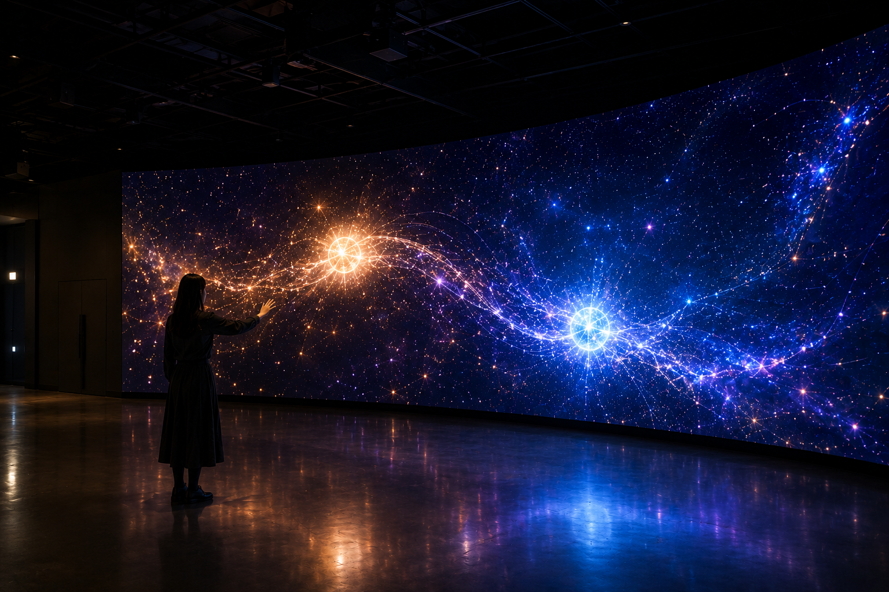

PHASE 01 :: IDLE
암전 진입
관객이 없는 기본 상태에서 시작하며, 외부 시각 자극이 차단된 고요한 우주 미디어월 전면으로 입장합니다.
관객의 손끝을 성간 망원경으로 삼아 우주를 탐색하고,
두 별이 만날 때 발생하는 광도 변화와 파동을 경험하는 체감형 미디어아트.
천문학에서 '하트비트 스타(Heartbeat Star)'는 타원 궤도를 도는 쌍성계가 서로 가장 가까워질 때, 강한 중력적 상호작용으로 인해 변광 곡선이 사람의 심전도(ECG) 패턴처럼 요동치는 천체 현상입니다.
본 작품은 이 과학적 메커니즘을 시각적 서사의 근거로 삼아, "독립된 별이 타인의 궤도와 교차하는 순간 생명의 파동이 탄생한다"는 모티프를 전달합니다.
두 별이 아주 긴 타원형 궤도로 서로를 돌고 있는 쌍성계를 떠올리면 됩니다. 평소에는 두 별이 멀리 떨어져 있다가, 궤도를 돌며 어느 순간 서로 아주 가까이 지나갑니다.
이때 가까워진 두 별이 서로를 강하게 끌어당기면서 별의 모양이 잠시 변하고, 우리가 보는 별의 밝기도 함께 변합니다. 이 밝기의 변화를 시간에 따라 기록하면 심장 박동처럼 보이는 독특한 모양이 나타나기 때문에 'Heartbeat Star'라고 부릅니다.
본 작품은 이 실제 천문 현상에서 영감을 받아, 별의 접근과 상호작용이 하나의 파동으로 이어지는 과정을 인터랙티브 미디어아트로 재해석합니다.
Thompson, S. E., Everett, M., Mullally, F., et al. (2012). “A Class of Eccentric Binaries with Dynamic Tidal Distortions Discovered with Kepler.” The Astrophysical Journal, 753(1), 86. DOI: 10.1088/0004-637X/753/1/86.
* Kepler 데이터에서 발견된 고이심률 쌍성계의 동적 조석 변형과 조석으로 유도된 맥동, 그리고 근접 시 나타나는 주기적 광도 변화를 작품의 시각적 모티프로 참고합니다.
Additional Science Reference
Rawls, M. (2014). “What’s in a Heartbeat?” AstroBites, August 27, 2014.
↗ Read article
* 관련 천문학 개념을 설명하는 해설 자료
관객이 없는 기본 상태에서 시작하며, 외부 시각 자극이 차단된 고요한 우주 미디어월 전면으로 입장합니다.
미디어월을 향해 손을 움직이면 Kinect가 관객을 인식하고 화면 속 시점과 상호작용을 시작합니다.
손을 움직여 3D 깊이감 속 우주를 탐색하고 잊혀진 별을 찾아 접근합니다.
특정 별에 접근하면 별이 반응하며 다음 인터랙션을 유도합니다.
두 별이 서로의 궤도에 진입하며 관계를 형성하기 시작합니다.
두 별의 만남과 함께 화면 전체에 Heartbeat Wave가 발생하며 파동이 퍼져나갑니다.
매일 빠른 스크롤과 과도한 정보 속에서 살아가는 관객에게 "우주를 천천히 조망하고 별 하나에 손을 내밀어볼 여유"를 건넵니다.
수동적인 관람을 넘어 내가 접근했을 때 비로소 반응하는 우주를 체험하며 타인과 세계에 선뜻 다가서는 순간의 온기를 전달합니다.
관객의 손을 별도의 컨트롤러 없이 우주 탐색 인터페이스로 사용하기 위해.
Kinect 데이터를 안정적으로 정리하고, 실시간 파동과 후처리 VFX를 담당하기 위해.
3차원 우주 공간, 카메라, 별의 거리와 궤도, 인터랙션 상태를 하나의 엔진에서 관리하기 위해.
작은 손의 움직임을 거대한 공간의 변화로 확장해 몰입감을 만들기 위해.
손 좌표를 추출하고 노이즈를 안정화합니다.
OSC를 통해 손 좌표를 전달하고 Camera를 제어합니다.
별 탐색, 선택, 생성, 접근, Orbit을 구현합니다.
Spout 기반으로 실시간 화면을 연동합니다.
Heartbeat Wave와 최종 시각효과를 구현합니다.

기본 작품은 Kinect만으로 완결합니다. 이후 심박 센서의 측정 안정성을 검증한 뒤 실제 BPM을 Heartbeat Wave의 간격과 속도, 밝기에 연결합니다.